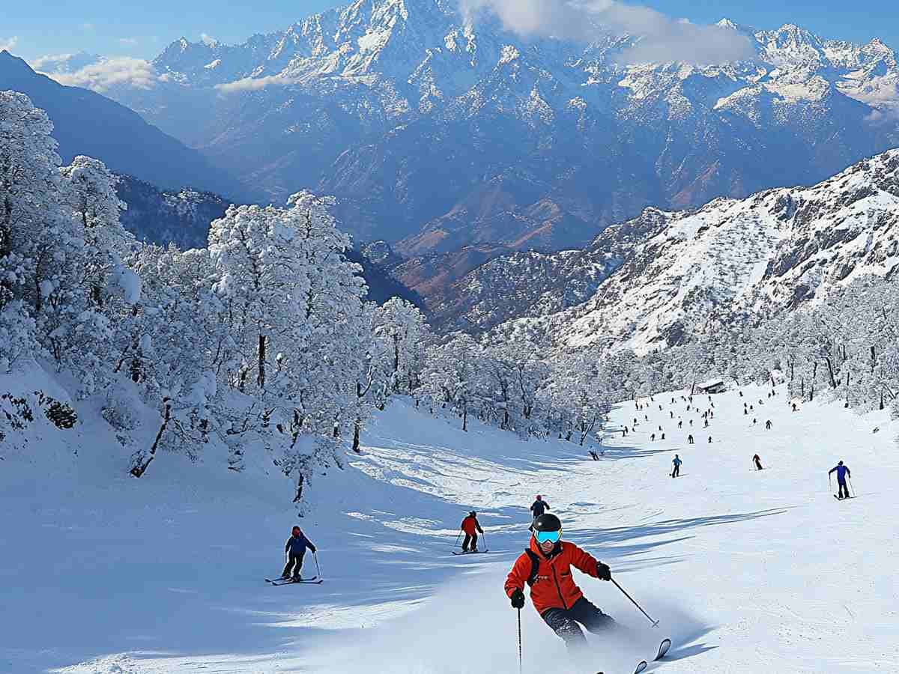

Categories
Why is Auli Famous?
Auli is one of India's top skiing destinations, known for its stunning snow-capped mountains and adventurous ski slopes. Located in Uttarakhand, it attracts tourists and adventure seekers from around the world.
- ❄️ Best skiing destination in India
- 🌄 Stunning Himalayan views
- 🚠 Asia's longest cable car ride
- 🌿 Beautiful meadows in summer
Popular Destinations in Auli

Gurso Bugyal
Meadow with panoramic views of Nanda Devi & Trishul.

Auli Ropeway
One of the longest cable cars in Asia.

Joshimath
A spiritual town and base for Auli.

Auli Artificial Lake
A high-altitude man-made lake.

Chattrakund
A small crystal-clear lake in dense forests.